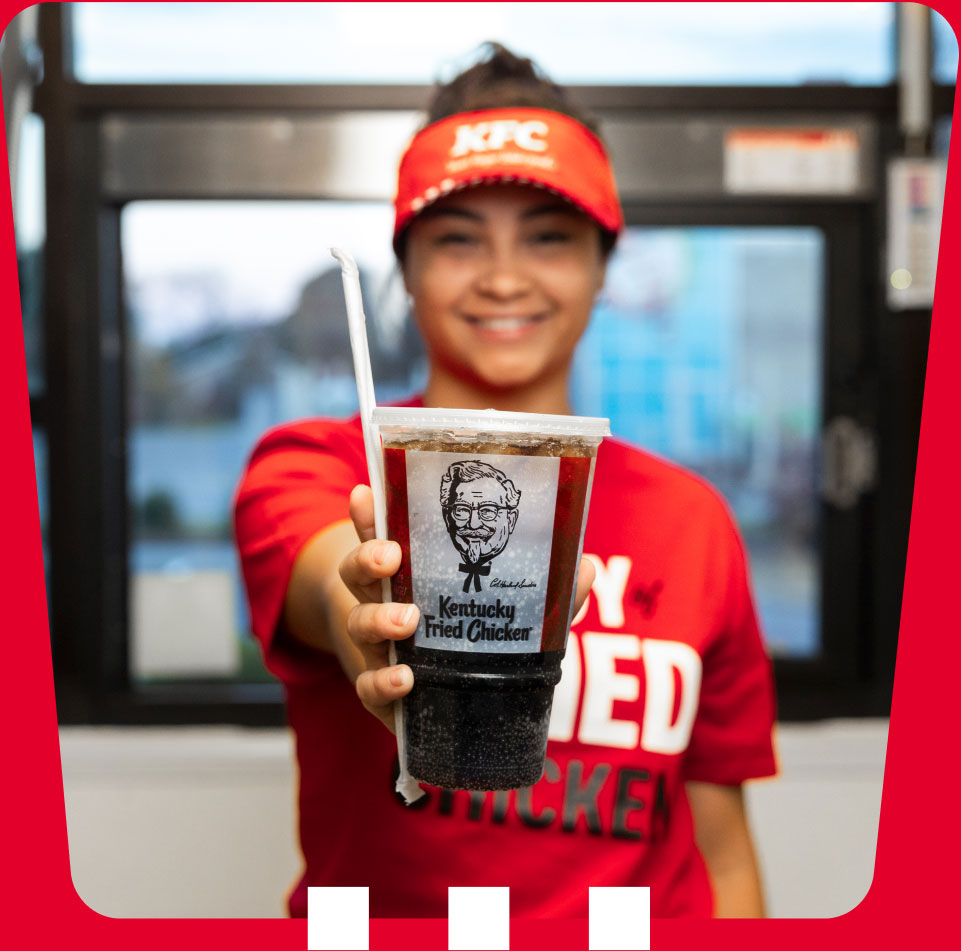

KFC Job application
We are hiring now!

Restaurant Careers
KFC founder Colonel Sanders took pride in serving
delicious fried chicken to his guests. As part of the KFC
team, you ensure every guest is served joy with food that
meets KFC’s Finger Lickin’ Good standards.
Explore Restaurant Careers
"Original Careers, Original People. Bring it."
KFC Corporation is an Equal Opportunity Employer. Applicants for all KFC Corporation job openings are welcome and will be considered without regard to race, age, national origin, color, religion, disability, military status, or any other basis protected by applicable federal, state, or local law. An offer of employment from KFC Corporation will be contingent upon a satisfactory background check and proof of employment eligibility. Restaurant-specific job postings are available at both KFC Corporate and franchisee operated locations. Those applying for a position with a franchisee or licensee of KFC Corporation are not applying to work at KFC Corporation or any of its affiliates. Franchisees and licensees are independent business owners and employers who are responsible for their own operations and employment practices, including setting their own wage and benefit programs.
© Copyright KFC Corporation 2026. All Rights Reserved.